Customer churn is a critical concern for telecom companies, as retaining existing customers is often more cost-effective than acquiring new ones. This project aims to analyze customer churn in a telecom company, leveraging customer demographics, account details, and service subscriptions to identify key factors influencing churn. By exploring patterns in the data, we seek to uncover insights that can help predict and reduce customer attrition, ultimately improving customer retention strategies. Fasten up the seat belt, and let’s explore this ocean!
Loading libraries
Load data
Code
telco_data <-read.csv("https://raw.githubusercontent.com/dsrscientist/DSData/master/Telecom_customer_churn.csv")# View the first few rowshead(telco_data)
customerID gender SeniorCitizen Partner Dependents tenure PhoneService
1 7590-VHVEG Female 0 Yes No 1 No
2 5575-GNVDE Male 0 No No 34 Yes
3 3668-QPYBK Male 0 No No 2 Yes
4 7795-CFOCW Male 0 No No 45 No
5 9237-HQITU Female 0 No No 2 Yes
6 9305-CDSKC Female 0 No No 8 Yes
MultipleLines InternetService OnlineSecurity OnlineBackup DeviceProtection
1 No phone service DSL No Yes No
2 No DSL Yes No Yes
3 No DSL Yes Yes No
4 No phone service DSL Yes No Yes
5 No Fiber optic No No No
6 Yes Fiber optic No No Yes
TechSupport StreamingTV StreamingMovies Contract PaperlessBilling
1 No No No Month-to-month Yes
2 No No No One year No
3 No No No Month-to-month Yes
4 Yes No No One year No
5 No No No Month-to-month Yes
6 No Yes Yes Month-to-month Yes
PaymentMethod MonthlyCharges TotalCharges Churn
1 Electronic check 29.85 29.85 No
2 Mailed check 56.95 1889.50 No
3 Mailed check 53.85 108.15 Yes
4 Bank transfer (automatic) 42.30 1840.75 No
5 Electronic check 70.70 151.65 Yes
6 Electronic check 99.65 820.50 Yes
Data Processing
Data inspection
Checking Data Quality
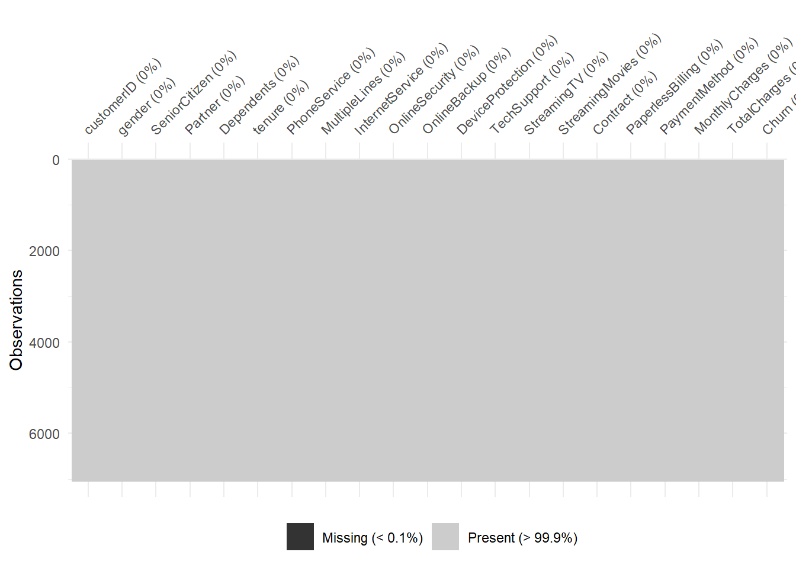
What we want to know what percentage of our data is missing? We can use vis_miss to provide the amount of missings in each columns.
We see that only less than 0.01% of our data is missing.
Missing values are common in datasets and should be thoroughly examined and addressed early in the analysis process. This is where we can use the naniar and visdat packages come in when creating the visualization.
For more readings on how to visualize missing data, find it here
Code
gg_miss_var(telco_data) +labs(title ="Missing Values in Each Column", y ="Look at all the missing ones") +theme_bw()
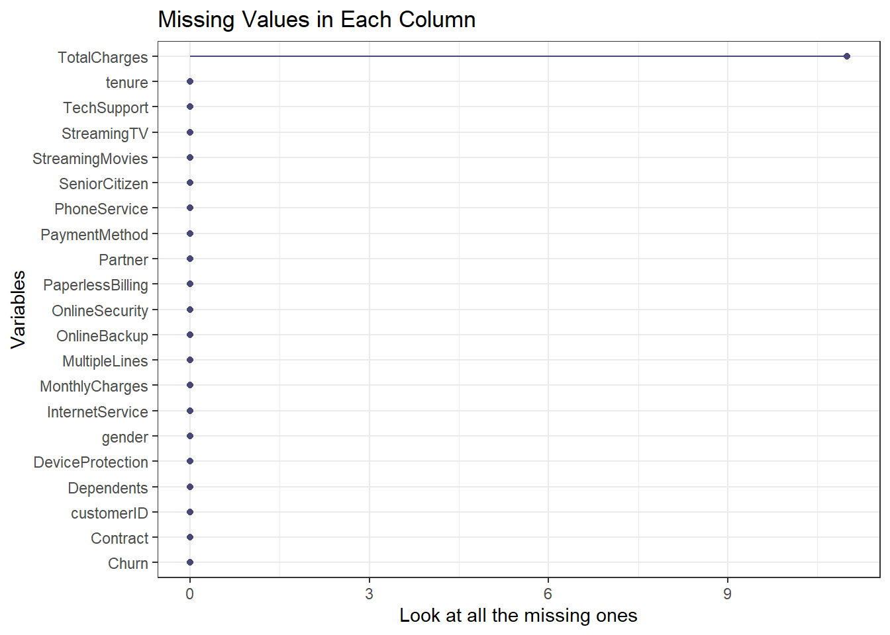
From the chart, we are able to confirm that only TotalChrges column is the only column with the missing values with more than 9 values.
Data Cleaning
Code
# Wrangle the datatelco_data <- telco_data |># mutate(Churn = ifelse(Churn == "Yes", 1, 0)) |>mutate(Churn =as.factor(Churn), # Convert 'Churn' to a factor variabletenure =as.numeric(tenure),MonthlyCharges =as.numeric(MonthlyCharges),TotalCharges =as.numeric(TotalCharges)) |>replace_na(list(tenure =0, MonthlyCharges =0, TotalCharges =0)) |>distinct() |>filter(!is.na(Churn)) |># Explicitly handle NA values in 'Churn'select(-customerID)# Check the summary of the datasetsummary(telco_data)
gender SeniorCitizen Partner Dependents
Length:7043 Min. :0.0000 Length:7043 Length:7043
Class :character 1st Qu.:0.0000 Class :character Class :character
Mode :character Median :0.0000 Mode :character Mode :character
Mean :0.1621
3rd Qu.:0.0000
Max. :1.0000
tenure PhoneService MultipleLines InternetService
Min. : 0.00 Length:7043 Length:7043 Length:7043
1st Qu.: 9.00 Class :character Class :character Class :character
Median :29.00 Mode :character Mode :character Mode :character
Mean :32.37
3rd Qu.:55.00
Max. :72.00
OnlineSecurity OnlineBackup DeviceProtection TechSupport
Length:7043 Length:7043 Length:7043 Length:7043
Class :character Class :character Class :character Class :character
Mode :character Mode :character Mode :character Mode :character
StreamingTV StreamingMovies Contract PaperlessBilling
Length:7043 Length:7043 Length:7043 Length:7043
Class :character Class :character Class :character Class :character
Mode :character Mode :character Mode :character Mode :character
PaymentMethod MonthlyCharges TotalCharges Churn
Length:7043 Min. : 18.25 Min. : 0.0 No :5174
Class :character 1st Qu.: 35.50 1st Qu.: 398.6 Yes:1869
Mode :character Median : 70.35 Median :1394.5
Mean : 64.76 Mean :2279.7
3rd Qu.: 89.85 3rd Qu.:3786.6
Max. :118.75 Max. :8684.8
From the summary, we can gain great insights about the data we are dealing, for example, we now have the total summary of churned customer compared to active customers to be 1869 and 5174 respectively. We have the quartiles information on the total charges information that can helps us understand the business revenue performance.
Plotting
Distribution of variables
Code
# Check the distribution of 'Churn'# Summarized data frame with counts and percentageschurn_summary <- telco_data |>group_by(Churn) |>summarise(count =n()) |>mutate(percent =round(100* count /sum(count), 1))# Plotggplot(churn_summary, aes(x = Churn, y = count, fill = Churn)) +geom_bar(stat ="identity", color ="black") +geom_text(aes(label =paste0(percent, "%")),vjust =1.5, color ="white", size =5) +labs(title ="Distribution of Churn", x ="Churn", y ="Count") +theme_minimal() +theme_gray()
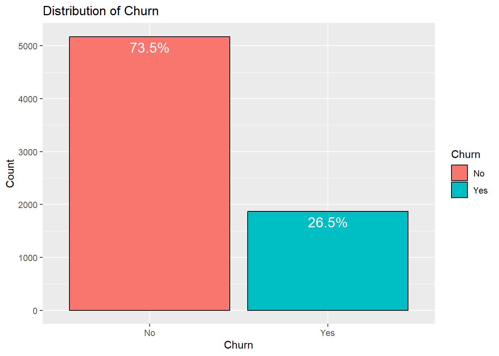
The above chart help us understand how distribution is between active customers in the business versus those who churned. We have 73.5% customers reported as active and 26.5% aready churned. At this point, it would be great for the management to investigate why the customers are churning of over a quarter of the customer base.
Aside from that, we can also investigate how the charges are distributed.
Code
# Check the distribution of 'TotalCharges'ggplot(telco_data, aes(x = TotalCharges)) +geom_histogram(bins =30, fill ="blue", color ="black") +labs(title ="Distribution of Total Charges",caption ="Distubutuion charges in a telecommunicaton",x ="Total Charges", y ="Count") +theme_minimal()
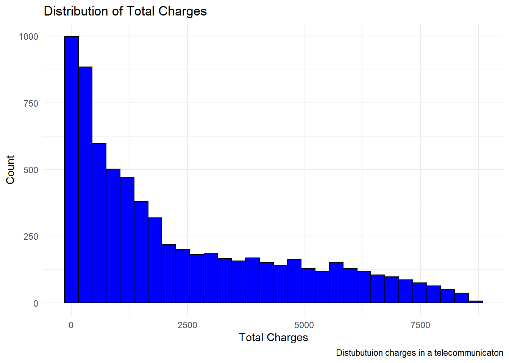
The bove chart shows that the distribution is right skewed meaning most customers have lower total charges, while a smaller number have very high charges, stretching the tail to the right.
On factor to help determine patterns that influence whether a customer is likely to stay or leave is their tenure in the business. Why this is important
Short Tenure: Customers who have been with the company for a short time might have a higher churn rate, as they might still be exploring options or not fully integrated into the service.
Long Tenure: Customers who have been with the company for a long time may have a lower churn rate due to loyalty or a reluctance to change, especially if they’ve developed habits around the service.
Code
# Check the distribution of 'tenure'ggplot(telco_data, aes(x = tenure)) +geom_histogram(bins =30, fill ="green", color ="black", alpha =0.5) +geom_density(aes(y = ..count..), fill ="blue", alpha =0.2) +# Add density curvelabs(title ="Distribution of Tenure with Density", x ="Tenure (Months)", y ="Count") +theme_minimal()
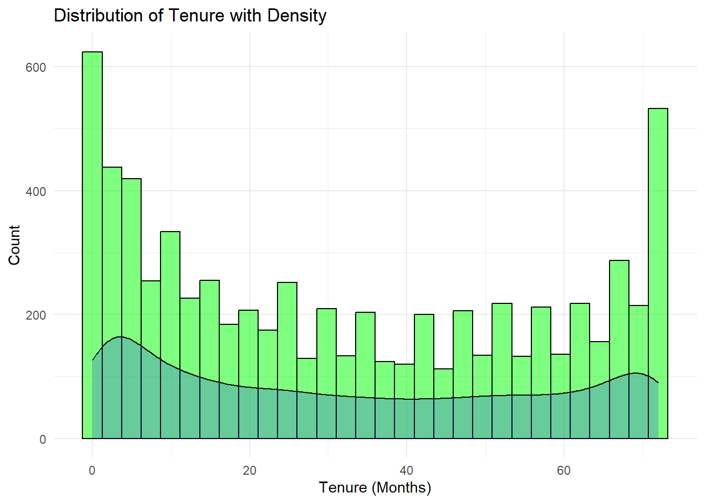
Some of the reasons why we need these analysis include creating features such as:
Customer Lifetime Value (CLV): Calculate the expected revenue based on tenure. This is a metric that predicts the total net profit a business can expect to earn from a customer throughout their entire relationship, helping businesses understand customer value for informed decisions on acquisition, retention, and marketing strategies
Churn Risk by Tenure: Categorize customers into groups like “new,” “mid-term,” and “long-term” to examine how churn rates differ across these groups.
Code
# Create tenure categoriestelco_data$TenureGroup <-cut(telco_data$tenure,breaks =c(0, 6, 12, 36, 100),labels =c("0-6 months", "6-12 months", "1-3 years", "3+ years"))# Tenure distribution with categoriesggplot(telco_data, aes(x = TenureGroup, fill = TenureGroup)) +geom_bar(color ="black") +labs(title ="Customer Distribution by Tenure Group", x ="Tenure Group", y ="Count") +theme_minimal() +theme(legend.position ="none")
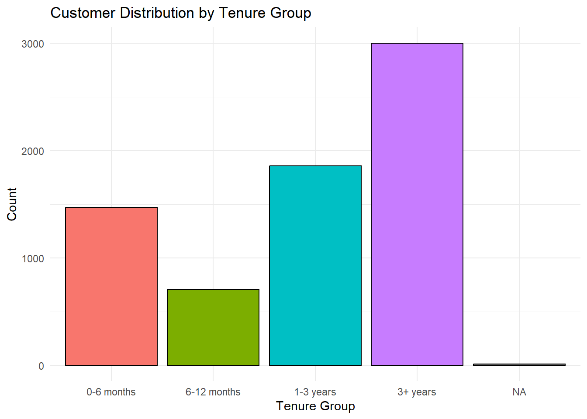
From the above analysis of the dicrutbution of tenure, we can conclude that customer who have been with the business for more than 3+ years are likely to stay with the business
To go deeper, let’s examine the proportion of customer churn to tenure. This gives us a finer insights on what should be our focus. We will create a tenure group to find at what stage are we losing more customers.
Code
# Churn Rate by Tenure Groupchurn_tenure_summary <- telco_data |>group_by(TenureGroup, Churn) |>summarise(count =n(), .groups ='drop') |>group_by(TenureGroup) |>mutate(percent =round(100* count /sum(count), 1)) |>filter(!is.na(TenureGroup))# Plot with percentagesggplot(churn_tenure_summary, aes(x = TenureGroup, y = count, fill = Churn)) +geom_bar(stat ="identity", color ="black") +geom_text(aes(label =paste0(percent, "%")), position =position_stack(vjust =0.5), size =5, color ="white") +labs(title ="Churn Rate by Tenure Group", x ="Tenure Group", y ="Proportion of Churn") +theme_minimal() +theme(legend.position ="top")
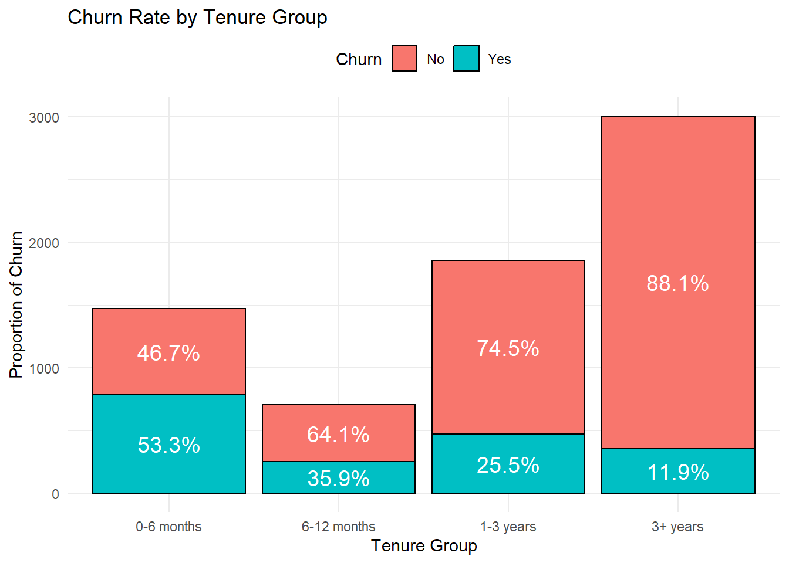
From the graph, the business needs to focus more on the on boarding period of 0-12 months since it is at these periods that we have a higher churn rate compared to tenure.
To switch gears, we now need understand the distribution of monthly charges. It can provide key insights into customer behavior, churn, and pricing strategies. From this, we can understand:
Code
# Check the distribution of 'MonthlyCharges'ggplot(telco_data, aes(x = MonthlyCharges)) +geom_histogram(bins =30, fill ="lightblue", color ="black", alpha =0.5) +geom_density(aes(y = ..count..), fill ="blue", alpha =0.2) +labs(title ="Distribution of Monthly Charges", x ="Monthly Charges", y ="Count",tag ="Figure 1",) +theme_minimal()
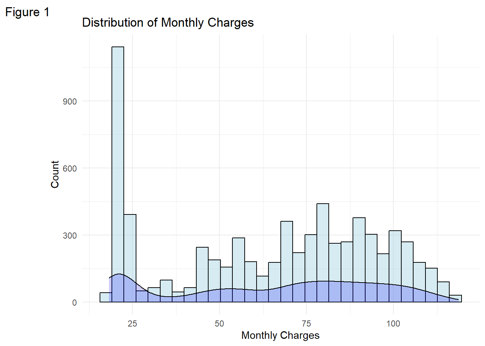
Code
ggplot(telco_data, aes(x = MonthlyCharges, fill = Churn)) +geom_histogram(bins =30, alpha =0.6, position ="identity", color ="black") +labs(title ="Monthly Charges by Churn", x ="Monthly Charges", y ="Count",tag ="Figure 2",) +theme_minimal()
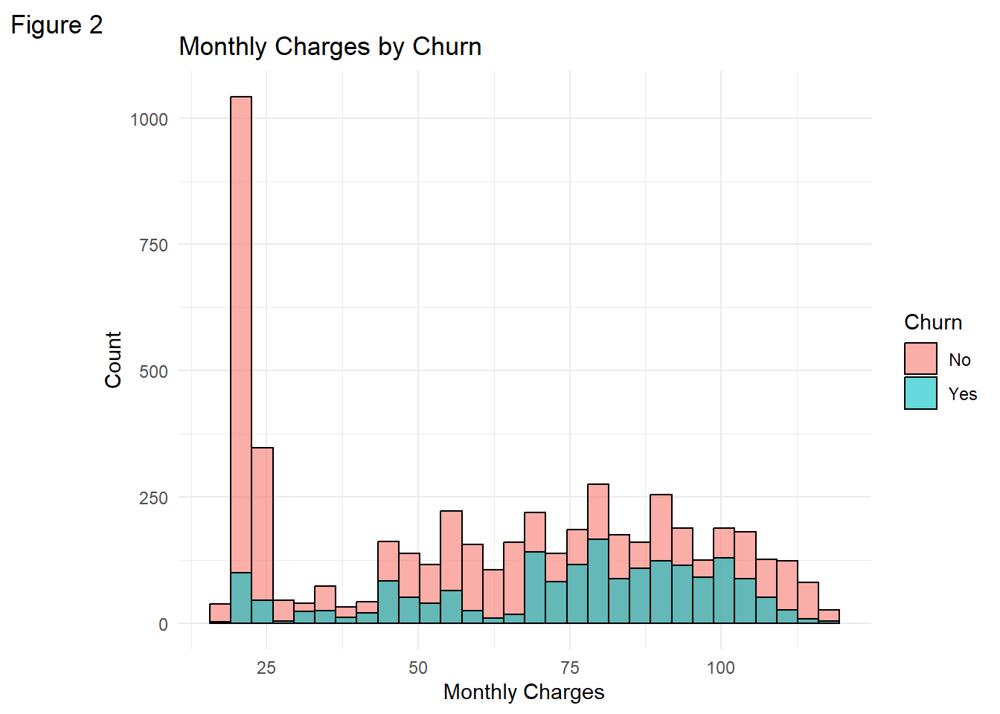
This will help you see if there are higher churn rates at specific monthly charge levels.
Min. 1st Qu. Median Mean 3rd Qu. Max.
18.25 35.50 70.35 64.76 89.85 118.75
Understanding the summary statistics of the monthly charges helps us understand the central tendencies and spread of the monthly charge. From the output, we can conclude that:
The range of monthly charges is from 18.25 (minimum) to 118.75 (maximum), so there’s quite a bit of variance in pricing.
The first quartile (35.50) and third quartile (89.85) show that the middle 50% of customers have charges between 35.50 and 89.85.
The median (70.35) being higher than the mean (64.76) suggests a slight left skew in the data. This means there are some customers paying much lower charges that are pulling the average down.
The distribution appears to be right-skewed, as we can also see in Figure 2 above, with a lot of customers paying lower charges and fewer customers paying very high charges.
A large portion of customers seem to paying under 70 per month, with a few higher-paying customers. This could impact churn behavior and might suggest that low-cost customers are more price-sensitive, while higher-cost customers could be at risk if they perceive a lack of value.
The Correlation Analysis
The correlation analysis provides insights into the relationships between the numerical variables in the customer churn dataset. By calculating the correlation matrix and visualizing it using a correlation plot, we can quickly identify which variables are positively or negatively related to each other. For instance, we may observe a strong positive correlation between MonthlyCharges and TotalCharges, which makes sense since total charges are typically accumulated from monthly payments.
Code
# Check the correlation between numerical variablescorrelation_matrix <-cor(telco_data |>select_if(is.numeric))# Plot the correlation matrix. Here we use the corrplot packagecorrplot(correlation_matrix, method ="circle", type ="upper", tl.col ="black", tl.srt =45)
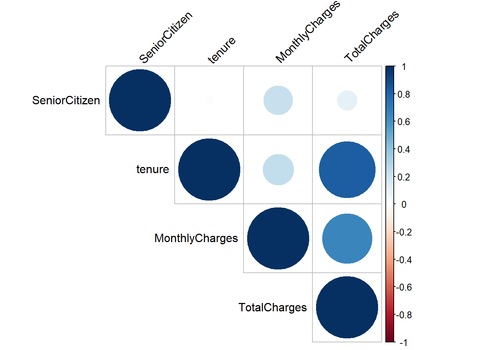
We are able to notice that there is a strong relationship between TotalCharges and tenure which makes logic since total charges accumulate over time. There is a moderately positive relationship between TotalCharges and MonthlyCharges which also is true since customer who pay more will have higher total charges.
There is a weak correlation between SeniorCitizen and other variables (tenure, MonthlyCharges, TotalCharges). We can therefore conclude that being a senior citizen does not significantly correlate with tenure, monthly charges, or total charges hence not much of a factor in this case.
Code
# Check the relationship between 'Churn' and 'TotalCharges'ggplot(telco_data, aes(x = TotalCharges, fill = Churn)) +geom_histogram(bins =30, position ="identity", alpha =0.5) +labs(title ="Total Charges vs Churn", x ="Total Charges", y ="Count") +theme_minimal()
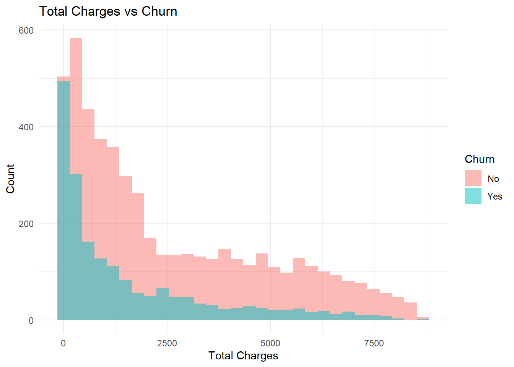
A correlation analysis of Total Charges vs Churn is important because it helps the cmpany understand if there is a relationship between the total amount a customer has paid over time and their likelihood of leaving the service.
Feature Engineering
Feature Engineering is one way we can create new input features in order to improve the performance of machine learning models, like finding or making predictions of which customer is most likely to churn
Code
# Create a new feature 'AverageCharges' as the ratio of 'TotalCharges' to 'tenure'telco_data <- telco_data |>mutate(AverageCharges = TotalCharges / tenure)# Check the distribution of 'AverageCharges'ggplot(telco_data, aes(x = AverageCharges)) +geom_histogram(bins =30, fill ="purple", color ="black") +labs(title ="Distribution of Average Charges", x ="Average Charges", y ="Count") +theme_minimal()
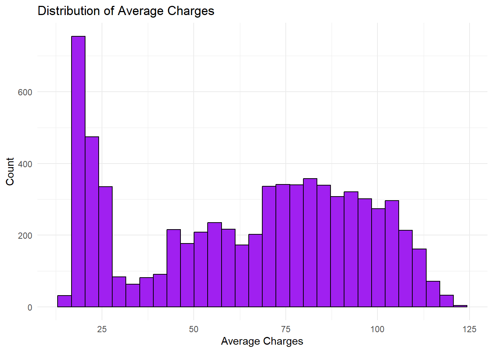
However, designing predictive models based on this data set may require some skills since algorithms that assume normality (e.g., logistic regression, linear regression) may perform poorly on skewed data sets. We will need to perform some transformation. But we need not worry if we will be using the tree-based models such as random forest, but that is beyond the scope of the project
Source Code
---title: "Customer Churn Rate"author: "Emmanuel Oduor Ochieng"date: "`r format(Sys.time(), '%B %d, %Y')`"execute: keep-md: true warning: falseformat: html: code-fold: true code-tools: true---## Customer Churn Rate Analysis in a Telecom CompanyCustomer churn is a critical concern for telecom companies, as retaining existing customers is often more cost-effective than acquiring new ones. This project aims to analyze customer churn in a telecom company, leveraging customer demographics, account details, and service subscriptions to identify key factors influencing churn. By exploring patterns in the data, we seek to uncover insights that can help predict and reduce customer attrition, ultimately improving customer retention strategies. Fasten up the seat belt, and let's explore this ocean!#### Loading libraries```{r load-library, include=FALSE, warning=FALSE}library(tidyverse)library(readr)library(dplyr)library(corrplot)library(ggplot2)library(visdat)library(caret)library(naniar)```#### Load data```{r}telco_data <-read.csv("https://raw.githubusercontent.com/dsrscientist/DSData/master/Telecom_customer_churn.csv")# View the first few rowshead(telco_data)```# Data Processing#### Data inspection```{r column-types, echo=FALSE, results="hide"}# Check the structure of the datasetstr(telco_data)```#### Checking Data Quality```{r column-class, echo=FALSE, results="hide"}# Check for missing valuesvis_miss(telco_data)```What we want to know what percentage of our data is missing? We can use `vis_miss` to provide the amount of missings in each columns.We see that only less than 0.01% of our data is missing.Missing values are common in datasets and should be thoroughly examined and addressed early in the analysis process. This is where we can use the `naniar` and `visdat` packages come in when creating the visualization.For more readings on how to visualize missing data, find it [here](https://cran.r-project.org/web/packages/naniar/vignettes/getting-started-w-naniar.html)```{r}gg_miss_var(telco_data) +labs(title ="Missing Values in Each Column", y ="Look at all the missing ones") +theme_bw()```From the chart, we are able to confirm that only `TotalChrges` column is the only column with the missing values with more than 9 values.#### Data Cleaning```{r}# Wrangle the datatelco_data <- telco_data |># mutate(Churn = ifelse(Churn == "Yes", 1, 0)) |>mutate(Churn =as.factor(Churn), # Convert 'Churn' to a factor variabletenure =as.numeric(tenure),MonthlyCharges =as.numeric(MonthlyCharges),TotalCharges =as.numeric(TotalCharges)) |>replace_na(list(tenure =0, MonthlyCharges =0, TotalCharges =0)) |>distinct() |>filter(!is.na(Churn)) |># Explicitly handle NA values in 'Churn'select(-customerID)# Check the summary of the datasetsummary(telco_data)```From the summary, we can gain great insights about the data we are dealing, for example, we now have the total summary of churned customer compared to active customers to be 1869 and 5174 respectively. We have the quartiles information on the total charges information that can helps us understand the business revenue performance.## Plotting#### Distribution of variables```{r}# Check the distribution of 'Churn'# Summarized data frame with counts and percentageschurn_summary <- telco_data |>group_by(Churn) |>summarise(count =n()) |>mutate(percent =round(100* count /sum(count), 1))# Plotggplot(churn_summary, aes(x = Churn, y = count, fill = Churn)) +geom_bar(stat ="identity", color ="black") +geom_text(aes(label =paste0(percent, "%")),vjust =1.5, color ="white", size =5) +labs(title ="Distribution of Churn", x ="Churn", y ="Count") +theme_minimal() +theme_gray()```The above chart help us understand how distribution is between active customers in the business versus those who churned. We have 73.5% customers reported as active and 26.5% aready churned. At this point, it would be great for the management to investigate why the customers are churning of over a quarter of the customer base.Aside from that, we can also investigate how the charges are distributed.```{r}# Check the distribution of 'TotalCharges'ggplot(telco_data, aes(x = TotalCharges)) +geom_histogram(bins =30, fill ="blue", color ="black") +labs(title ="Distribution of Total Charges",caption ="Distubutuion charges in a telecommunicaton",x ="Total Charges", y ="Count") +theme_minimal()```The bove chart shows that the distribution is right skewed meaning most customers have lower total charges, while a smaller number have very high charges, stretching the tail to the right.On factor to help determine patterns that influence whether a customer is likely to stay or leave is their tenure in the business. Why this is important- **Short Tenure**: Customers who have been with the company for a short time might have a higher churn rate, as they might still be exploring options or not fully integrated into the service.<!-- -->- **Long Tenure**: Customers who have been with the company for a long time may have a **lower churn rate** due to loyalty or a reluctance to change, especially if they’ve developed habits around the service.```{r}# Check the distribution of 'tenure'ggplot(telco_data, aes(x = tenure)) +geom_histogram(bins =30, fill ="green", color ="black", alpha =0.5) +geom_density(aes(y = ..count..), fill ="blue", alpha =0.2) +# Add density curvelabs(title ="Distribution of Tenure with Density", x ="Tenure (Months)", y ="Count") +theme_minimal()```Some of the reasons why we need these analysis include creating features such as:- [**Customer Lifetime Value (CLV)**](https://www.qualtrics.com/en-au/experience-management/customer/customer-lifetime-value/#:~:text=with%20our%20guide.-,What%20is%20customer%20lifetime%20value%20(CLV)?,useful%20for%20tracking%20business%20success.): Calculate the expected revenue based on tenure. This is a metric that predicts the total net profit a business can expect to earn from a customer throughout their entire relationship, helping businesses understand customer value for informed decisions on acquisition, retention, and marketing strategies<!-- -->- **Churn Risk by Tenure**: Categorize customers into groups like "new," "mid-term," and "long-term" to examine how churn rates differ across these groups.```{r}# Create tenure categoriestelco_data$TenureGroup <-cut(telco_data$tenure,breaks =c(0, 6, 12, 36, 100),labels =c("0-6 months", "6-12 months", "1-3 years", "3+ years"))# Tenure distribution with categoriesggplot(telco_data, aes(x = TenureGroup, fill = TenureGroup)) +geom_bar(color ="black") +labs(title ="Customer Distribution by Tenure Group", x ="Tenure Group", y ="Count") +theme_minimal() +theme(legend.position ="none")```From the above analysis of the dicrutbution of tenure, we can conclude that customer who have been with the business for more than 3+ years are likely to stay with the businessTo go deeper, let's examine the proportion of customer churn to tenure. This gives us a finer insights on what should be our focus. We will create a tenure group to find at what stage are we losing more customers.```{r}# Churn Rate by Tenure Groupchurn_tenure_summary <- telco_data |>group_by(TenureGroup, Churn) |>summarise(count =n(), .groups ='drop') |>group_by(TenureGroup) |>mutate(percent =round(100* count /sum(count), 1)) |>filter(!is.na(TenureGroup))# Plot with percentagesggplot(churn_tenure_summary, aes(x = TenureGroup, y = count, fill = Churn)) +geom_bar(stat ="identity", color ="black") +geom_text(aes(label =paste0(percent, "%")), position =position_stack(vjust =0.5), size =5, color ="white") +labs(title ="Churn Rate by Tenure Group", x ="Tenure Group", y ="Proportion of Churn") +theme_minimal() +theme(legend.position ="top")```From the graph, the business needs to focus more on the on boarding period of 0-12 months since it is at these periods that we have a higher churn rate compared to tenure.To switch gears, we now need understand the distribution of monthly charges. It can provide key insights into customer behavior, churn, and pricing strategies. From this, we can understand:```{r}# Check the distribution of 'MonthlyCharges'ggplot(telco_data, aes(x = MonthlyCharges)) +geom_histogram(bins =30, fill ="lightblue", color ="black", alpha =0.5) +geom_density(aes(y = ..count..), fill ="blue", alpha =0.2) +labs(title ="Distribution of Monthly Charges", x ="Monthly Charges", y ="Count",tag ="Figure 1",) +theme_minimal()ggplot(telco_data, aes(x = MonthlyCharges, fill = Churn)) +geom_histogram(bins =30, alpha =0.6, position ="identity", color ="black") +labs(title ="Monthly Charges by Churn", x ="Monthly Charges", y ="Count",tag ="Figure 2",) +theme_minimal()```This will help you see if there are higher churn rates at specific monthly charge levels.#### `MonthlyCharges` Summary Statistics```{r}#Summary statisticssummary(telco_data$MonthlyCharges)```Understanding the summary statistics of the monthly charges helps us understand the central tendencies and spread of the monthly charge. From the output, we can conclude that:- The **range** of monthly charges is from **18.25** (minimum) to **118.75** (maximum), so there's quite a bit of **variance** in pricing.<!-- -->- The **first quartile (35.50)** and **third quartile (89.85)** show that the **middle 50% of customers** have charges between **35.50 and 89.85**.<!-- -->- The **median (70.35)** being higher than the **mean (64.76)** suggests a **slight left skew** in the data. This means there are some customers paying much lower charges that are pulling the average down.<!-- -->- The distribution appears to be **right-skewed,** as we can also see in `Figure 2` above, with a lot of customers paying lower charges and fewer customers paying very high charges.A large portion of customers seem to paying **under 70** per month, with a few higher-paying customers. This could impact **churn behavior** and might suggest that low-cost customers are more price-sensitive, while higher-cost customers could be at risk if they perceive a lack of value.#### The Correlation AnalysisThe correlation analysis provides insights into the relationships between the numerical variables in the customer churn dataset. By calculating the correlation matrix and visualizing it using a correlation plot, we can quickly identify which variables are positively or negatively related to each other. For instance, we may observe a strong positive correlation between `MonthlyCharges` and `TotalCharges`, which makes sense since total charges are typically accumulated from monthly payments.```{r}# Check the correlation between numerical variablescorrelation_matrix <-cor(telco_data |>select_if(is.numeric))# Plot the correlation matrix. Here we use the corrplot packagecorrplot(correlation_matrix, method ="circle", type ="upper", tl.col ="black", tl.srt =45)```We are able to notice that there is a strong relationship between `TotalCharges` and `tenure` which makes logic since total charges accumulate over time. There is a moderately positive relationship between `TotalCharges` and `MonthlyCharges` which also is true since customer who pay more will have higher total charges.There is a weak correlation between `SeniorCitizen` and other variables (`tenure`, `MonthlyCharges`, `TotalCharges`). We can therefore conclude that being a senior citizen does not significantly correlate with tenure, monthly charges, or total charges hence not much of a factor in this case.```{r}# Check the relationship between 'Churn' and 'TotalCharges'ggplot(telco_data, aes(x = TotalCharges, fill = Churn)) +geom_histogram(bins =30, position ="identity", alpha =0.5) +labs(title ="Total Charges vs Churn", x ="Total Charges", y ="Count") +theme_minimal()```A correlation analysis of Total Charges vs Churn is important because it helps the cmpany understand if there is a relationship between the total amount a customer has paid over time and their likelihood of leaving the service.#### Feature Engineering[Feature Engineering](https://www.tmwr.org/recipes) is one way we can create new input features in order to improve the performance of machine learning models, like finding or making predictions of which customer is most likely to churn```{r}# Create a new feature 'AverageCharges' as the ratio of 'TotalCharges' to 'tenure'telco_data <- telco_data |>mutate(AverageCharges = TotalCharges / tenure)# Check the distribution of 'AverageCharges'ggplot(telco_data, aes(x = AverageCharges)) +geom_histogram(bins =30, fill ="purple", color ="black") +labs(title ="Distribution of Average Charges", x ="Average Charges", y ="Count") +theme_minimal()```However, designing predictive models based on this data set may require some skills since algorithms that assume normality (e.g., logistic regression, linear regression) may perform poorly on skewed data sets. We will need to perform some transformation. But we need not worry if we will be using the **tree-based models** such as random forest, but that is beyond the scope of the project